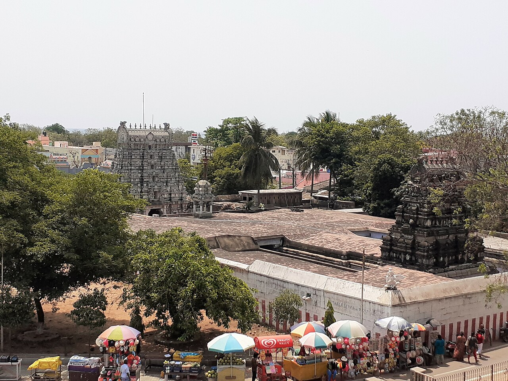
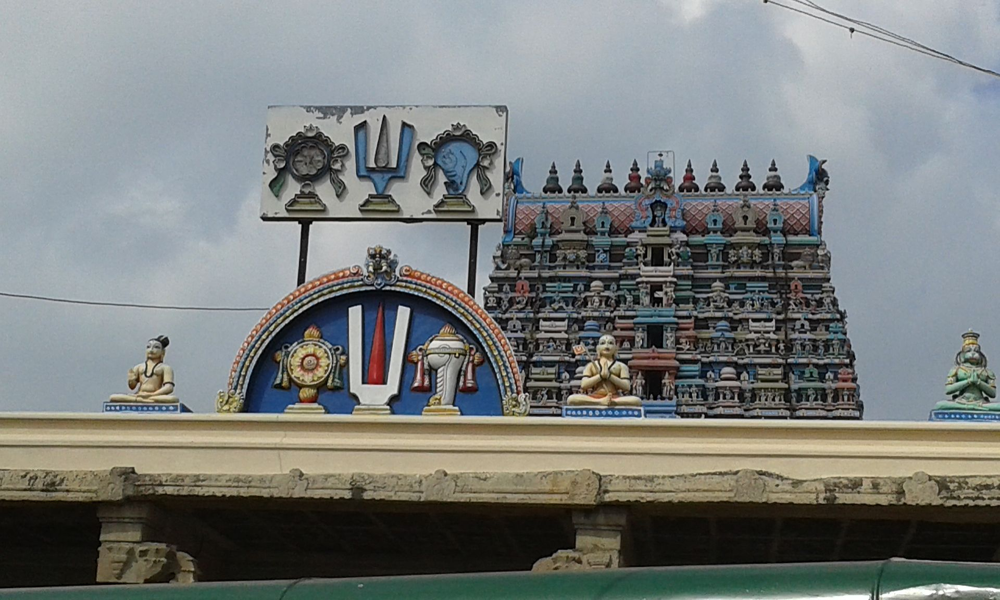

Website developed by K.Harsha Vardhan
06-June-2024, 08:28 PM
A Divya Desam (Sanskrit: दिव्यदेशम्, Tamil: திவ்ய தேசம்) or Vaishnava Divya Desam is one of the 108 Vishnu and Lakshmi temples that is mentioned in the works of the Alvars, the poet-saints of the Sri Vaishnava tradition Of the 108 temples, 105 are in India, one is in Nepal, and the last two are believed to be outside the earth, in Tirupparkatal and Vaikuntham. In India, they are spread across the states of Tamil Nadu (84), Kerala (11), Andhra Pradesh (2), Gujarat (1), Uttar Pradesh (4), and Uttarakhand (3). Muktinath, Saligramam is the only Divya Desam in Nepal. The Divya Desams are revered by the 12 Alvars in the Naalayira Divya Prabandham, a collection of 4,000 Tamil verses. The Divya Desams follow either Tenkalai or Vadakalai modes of worship.

The Srirangam temple is often listed as the largest functioning Hindu temple in the world. The temple occupies an area of 156 acres (631,000 m2) with a perimeter of 4,116m (10,710 feet) making it the largest temple in India and one of the largest religious complexes in the world. The annual 21 day festival of Vaikuntha Ekadashi, conducted during the Tamil month of Margaḻi (December–January) attracts 1 million visitors.
The temple is locally called Nachiyar Koil (to be distinguished from Thirunaraiyur) and is one of the few Divya Desams where the goddess is offered prominence over Vishnu. The temple is the birthplace of Thiruppaan Alvar, one of the twelve Alvars. In Srirangam, the yearly birth festival of Thiruppaan Alvar is celebrated with the Vishvarupa Darshanam of Ranganatha at the sanctum on the occasion of his birthday. The utsavar of Tiruppan Alvar is taken from the temple to Srirangam.

This rare temple is dedicated to the Hindu Trimurti (trinity) namely Vishnu, Shiva, and Brahma. According to Hindu legend, the temple is believed to have been constructed by Janakar, the king of Janakapuri and the father of Sita from the epic Ramayana. Tirumangai Alvar is believed to have resided in the temple to build the surrounding walls of the Srirangam Ranganathaswamy temple.

The Pundarikakshan Perumal temple is believed to have been built by the Pallava king Dantivarman (796–847 CE). A swastika-shaped temple tank built during 800 CE is present in the south-western corner of the street around the temple. It has four stepped gateways, each having 51 steps. The tank is believed to have been built by Kamban Araiyan during the reign of Dantivarman. In modern times, it is maintained by the Department of Archaeology of the Government of Tamil Nadu. The temple complex covers an area of 2.62 ha (6.5 acres), while the tank covers an area of 0.1256 ha (0.310 acres). The chariot festival is unique in the state as a community feast is offered by several individuals and committees, a custom many centuries old.

King Sundara Chola, who ruled the area, was a devotee of the temple, and during each of his innumerable victories in wars, he showered a lot of wealth on this temple. His prime minister Anirudha Brahmarayar is believed to be from Anbil, the village where the temple is located. The copper plates having the records from the Chola period from Anbil indicate generous contribution from the Medieval Cholas indicate various gifts to the temple.

The temple has inscriptions from the 18th year of the reign of Aditya Chola. The temple is one of the five Pancharanga Kshetrams, a group of five Hindu temples on the banks of the Kaveri River dedicated to Ranganatha, a form of Vishnu.

Since Vishnu relieved (vimochana) the curse (sābha) of Shiva (also called Hara), the temple is called Hara Sābha Vimochana Temple.

Kaveri wanted to cleanse herself, and approached the Hindu god Brahma. She is believed to have worshipped Vishnu at this place, and received relief. A parrot that was devoted to Vishnu was shot down in the nearby forest. Vishnu rescued the parrot and apprised him of his previous birth. Thus, it is believed that Vishnu descends here for all forms of life. Vishnu is also believed to have appeared for sage Nandaka.
Based on Gajendra Moksha, Gajendra Varadha is believed to have appeared to Gajendra the elephant also called Indrajumnan, the crocodile called Huhu, Sage Parasara and Anjaneya. The temple is one of the Panchakanna (Krishnaranya) Kshetrams, the five holy temples associated with Krishna, an avatar of Vishnu.

Kolavalli Ramar is believed to have appeared for Sita, and the temple is believed to be the place where Rama performed the last rites of the eagle king Jatayu.

Andalakkum Aiyarn is believed to have appeared for an affluent devotee trying to save Rangantha. It is also believed that the presiding deity appeared for Kamadhenu, the divine cow, and also for Tirumangai Alvar, the saint poet of the 8th century.
The temple is called Ubaya Pradhana Kshetram as the mulavar (presiding deity) and utsavar (festive deity) enjoy the same importance. It is believed that the presiding deity asked Nathamuni to compile the four thousand verses of Naalayira Divya Prabandham at this place. The twin temple chariots weigh 300 t (660,000 lb) each and are next only in size to the ones in Thygaraja temple in Thiruvarur and Andal Temple in Srivilliputhur. This temple is along Kaveri and is one of the Pancharanga Kshetrams.
It is believed that Vishnu appeared as Uppiliappan to marry sage Hemarishi's daughter, who was Lakshmi's avatar. Since the sage stated that his girl was too young to offer him food with salt, Vishnu agreed to accept an offering without salt.
According to local lore, Vishnu was of the view that during Kali Yuga, men would have to listen to women. Hence, he decided that he would first set an example and listen to the goddess here. During all festive occasions, the first rights are reserved for Nachiyar, who moves ahead, while Srinivasa follows her. Even the food is first served to Nachiyar, and then to Srinivasa. The Kal Garuda image in the temple used during the festive occasions is believed to increase in weight seeking 4, 8, 16, 32, 64, and 128 people in succession when the procession comes out of various gates from the sanctum to the main entrance of the temple.

Saranathan is believed to have appeared to river Kaveri, sage Markandeya, and Hindu god Indra. The crown of some of the images from the Chola period show influence of Buddhist tradition in the region. The metal image of Sita is believed to be a classic example of Chola Art during the 9th-10th centuries.
Nandi, the sacred bull of Shiva, is believed to have got his curses relieved by worshipping Vishnu here, and hence the place is called Nandipuram and Nandhipura Vinnagaram. It is also believed that king Sibi worshipped Vishnu at this place.
The temple is counted as Vaishnava Sukra Kshetra as Vishnu appeared as a beautiful deity to please his devotee Sukra (Venus). The place derived its name Thiruvelliyangudi hence and the presiding deity is also referred to as Velliyan. It is believed that Vishnu appeared in Kalyana Kolam (marriage posture) to Parasarar, Markendeyar, Mayan, Brahma, Sukran, and Bhudevi. To de-stress or relieve Vishnu, his mount or vahana, the eagle Garuda, holds the conch and the Sudarshana Chakram of Vishnu, making this the only temple where Garuda is depicted in such a posture.
The temple is one of the Panchakanna (Krishnaranya) Kshetrams, the five holy temples associated with Krishna, an avatar of Vishnu. The temple also has a statue of the Buddha worshipped in the shrine.

The idol of Perumal is depicted with silky hair at this locale. Legend has it that he grew the hair to safeguard his devotee's words. The temple is one of the Panchakanna (Krishnaranya) Kshetrams, the five holy temples associated with Krishna, an avatar of Vishnu.

The temple is one of the Panchakanna (Krishnaranya) Kshetrams, the five holy temples associated with Krishna, an avatar of Vishnu.

The tributary of river Cauvery, Odambokki, passes close to the temple and the river is also called Virutha Kaveri. This leads to one of the names of presiding deity, "Kaveri Thuraivan". The present day Nagapattinam is believed to have been a forest, historically named Sundararinyam. During the Treta Yuga, a prince, Dhruva, heard about the importance of the forest, and began a penance, wishing to see Vishnu.

Unlike other Divya Desams where a single shrine is referred, this set of temples is referred together in all the pasurams (verses). During the Treta Yuga, there were three demons by the names of Tanchakan, Tantakan, and Kacamukan who were blessed by Shiva, and became very powerful. They grew arrogant and troubled sage Parashara, who was doing penance at this place. Vishnu killed Thanjakan, after whom Thanjavur was named.
The temples are located in the banks of the Vennaaru river. Manikundram has a small east facing shrine with the deity and his consort in the same sanctum. All of the pasurams (verses) of Nammalvar and Thirumangai Alvar that mention Thanjai refer to this shrine.
Thanjiyali Nagar is home to Veera Narasimha Perumal, who has a small east facing shrine with the deity and his consort in the same sanctum. Veera Narasimha Perumal is sculpted in a seated posture, giving darshanam to sage Markandeya. The shrine over the sanctum is called Vedasundara Vimana, and the water body associated with it is called Surya Pushkarani.

In a Hindu legend, Brahma, the creator deity, drove away the cattle belonging to Krishna, an avatar of Vishnu. Krishna created another herd. Realising that the herd belonged to Krishna, Brahma apologised, and wished Krishna to set his abode at this place. Since Krishna appeared for the cattle and settled here, the presiding deity is called Amaruviappan (the one who is flanked by cattle). Following the legend, the presiding deity in the sanctum is portrayed with cattle surrounding him.

Shiva ordered the sage Vyaghrapada to perform penance at Srirangam, requesting the god Vishnu to give him a place in his abode, Vaikuntha. Vyaghrapada was joined by sage Patanjali in his journey. Because of his poor eyesight, the sages instead went southward, lost their way and reached Krupa Samudram, modern day Tirusirupuliyur. They prayed to Vishnu to come from Srirangam to grant them moksha (divine liberation). Vishnu is also believed to have appeared for sage Vyasa at this place.

Chandra once conducted a sacrifice called the rajasuya yajna, which was attended by all the celestial deities. Tara, the wife of Brihaspati was attracted by Chandra. Brihaspati appealed to Vishnu on the event and cursed Chandra to have leprosy. Tara bore Budha from Chandra and since his birth had resulted from an illicit relationship, Budha hated his father. To propitiate himself of the curse, Chandra started worshipping Vishnu in this place.
According to Hindu legend, this site is where the moon god, Chandra is believed to have been relieved of his curse. Indu means moon, and the place Tiruindaloor derives its name from the legend. Chandra, worshipped Vishnu, who appeared to please his devotee.
Thirumangai Aḻvar was requested by the Shaiva Kuravar Sambandar to praise God through pasurams. The deity in the temple is praised as "Man alantha tadalan", meaning the one who measured the land. The name Tadalan is in honour of Tiruvikrama (Vamana) form and the mulavar (central deity) fixed in the central shrine is in this form. The presiding deity, Tiruvikrama, appeared for sage Ashtakoma.
Krishna, the eighth incarnation of Vishnu, and his consort Satyabhama, chose this location for their garden, as it resembled the one in the palace of the king of celestial deities, Indra. Kavalam indicates elephant, and padi indicates place - it is believed that Krishna saved an elephant at this place leading to the name of the temple. The event is described in the verses of Tirumangai Alvar in the Naalayira Divya Prabandham.

The Hindu god Shiva is believed to have started dancing in fury at this place after the death of his consort Sati during the yagna (sacrifice) of Daksha. Each time his lock of hair touched the ground, there were eleven other forms of Shiva who appeared. The celestial deities were worried that if the dance continues, it would result in the decimation of all of creation. They prayed to Vishnu for help, who appeared at this place. On seeing Vishnu, Shiva's anger reduced, and he requested Vishnu to appear in eleven forms like he had. On his request, Vishnu appeared in eleven different forms at Tirunangar. The eleven places where Vishnu appeared are believed to be where the eleven temples in Tirunangar are located.


A site where Arjuna prayed to Krishna.
Associated with Narasimha's slaying of Hiranyakashipu, and his pacification by Lakshmi sitting on his lap.
Regarded to be the site where Ranganatha offered a darshanam to Thirumangai Alvar and his wife.


The shrine has close connections with the Govindaraja temple in Tirupati, dating back to the saint Ramanuja of the 11-12th century. Ramanujar fled to Tirupati with the utsava (festival image) of the temple to escape Shaiva persecution.

A number of sages bore witness to Mahavishnu in his resplendent form, with his weapons Sudarshana Chakra (discus), Panchajanya (conch) and the Kaumodaki (mace) gracing his arms.

The temple is believed to be the place where the first three Alvars, the Vaishnava saints, namely, Poigai Alvar, Bhoothathalvar, and Peyalvar attained salvation. The temple is one of the Panchakanna (Krishnaranya) Kshetrams, the five holy temples associated with Krishna, an avatar of Vishnu.

One of the greatest Hindu scholars of the Vaishnava Vishishtadvaita philosophy, Ramanuja, is believed to have resided in this temple. The temple, along with Ekambareswarar Temple and Kamakshi Amman Temple in Kanchipuram, is popularly known as Mumurtivasam (abode of the trio), while Srirangam is referred to as ‘The Koil’ (temple) and Tirupati as the ‘Malai’ (hill).

Also based on the Gajendra Moksha: The elephant Gajendra used to worship Vishnu with the lotus fetched from the temple tank every day. Once, while picking up a lotus, a crocodile caught the leg of Gajendra, who started calling the name of Vishnu for help. Vishnu sent his discus to punish the crocodile, and relieve the elephant. The presiding deity is addressed by various names like Adikesava Perumal, Gajendra Varadhan, and Chakradhar.

Vedanta Desika (1268 - 1369 CE) was an ardent devotee of Deepa Prakasa Temple at Thoppul. The devotion of Desika is mentioned in Saranagathi Deepika in 59 verses. He was born in this kshetra. Vedanta Desika also has a shrine inside the temple. A statue of Hayagriva worshipped by him also has a temple nearby to him.
Aḻagiya Singar is believed to have appeared to slay Hiranya, the demon king. Velukkai is derived from Vel (desire) and irukkai (place of stay), meaning the place where Vishnu desired to stay, which became Velukkai from Velirukkai.

The temple has no presiding deity, but just a festive image probably brought from another shrine. The images of the festival deity, Jagadishvara, facing the east and having four arms, is housed in a hall in the second precinct. The water body associated with the temple is Akrura Tirtham and the vimana is Jagadiswara Vimanam. According to Pillai Perumal Aiyangar in his Nurrettrutiruppatiyantati, Vishnu revealed himself to a sage in the form of a child in a banyan leaf.

The temple is considered one of three oldest temples in Kanchipuram, and is believed to have been built by the Pallavas of the late 8th century CE, with later contributions from Medieval Cholas and Vijayanagara kings. The temple is associated with a chapter in Mahabharata when Krishna went to the Kauravas as a missive (called Thoota locally) to the Pandavas.

Shiva once attempted to test the devotion of his consort Parvati by setting her aflame while she meditated under the temple's mango tree. When she prayed for Vishnu's intervention, he seized Shiva's crescent, and used its power to douse the divine flame.
The central shrine of temple is most commonly referred as Peragam, while the smaller shrine where the image of the demigod Adishesha is houses is called Tiruoorgam. According to tradition, Mahabali, at the foot of Vamana, could not view the vishvarupam and requested him to produce a smaller form. Vishnu obliged and appeared as a snake in a smaller shrine. The shrine is frequented by childless couple praying for offspring.
[55] The shrine is located on the third precinct of the temple. According to Hindu legend, sage Garga performed his penance at this temple and obtained knowledge. The place thus derived its name Garagaham, which later became Kaaragam. The presiding deity of the shrine is Karunakara Perumal facing north and seated on Adisesha and his consort Padmamani Nachiar. The temple tank associated with it is called Agraya Tirtha and the vimana is called Vamana Vimanam or Ramaya Vimanam.
[56] The shrine is located in the second precinct. The presiding deity is called Kalvar and faces north, while his consort is Kamalvalli Thayar. Gauri Tatakam and Taratara Tatakam are the temple tanks associated with the temple and the vimana is called Puskala Vimana. There is a separate for Aranavalli Thayar.
The goddess Saraswati, angry with Brahma, attempted to disrupt his yajna. Vishnu stopped her in these efforts. Defeated, Saraswati took the form of the Vegavati river. As Vishnu interfered the path of the river, it was termed Vegavani, then as Vegannai, which gradually corrupted to Vekka.
The shrine is present inside the Kamakshi Amman temple, and glorifies Vishnu in his form of Varaha.

Associated with the legend that Vishnu purportedly assumes his form in different hues depending on the conduct of humans during a given age.
Regarded to be the site where Vishnu appeared before Pallava princes who had performed a yajna for him.

The last rites of Jatayu are believed to have been performed here by Perumal.

Regarded to be the site where Varuna worshipped Perumal.
Regarded to be the site where Vishnu tested the devotion of a sage by asking him large portions of his food and residence before blessing him.
The name Parthasarathy, in Tamil, means the 'charioteer of Arjuna', referring to Krishna's role as a charioteer to Arjuna in the epic Mahabharata. It was originally built by the Pallavas in the 8th century and considered the oldest structural in Chennai.

Brahmanda Purana refers this place Toyatri, meaning a mountain surrounded by water. Thiruneermalai, the modern Tamil name also means a sacred mountain surrounded by water. Among the eight sacred Vishnu temples where he manifested himself called "Ashtaswayamvaka Kshetra".

The sage Kalava had 360 daughters who wished to wed Varaha, and the site derives its name from the belief that Varaha marries a maiden here everyday.
The temple is believed to be the birthplace of the Vaishnava Alvar saint Bhoothathalvar. Sthalasayana Perumal is believed to have appeared to sage Pundarika. The temple is one of the 32 Group of Monuments at Mahabalipuram that are declared as UN world heritage sites, but unlike others that are maintained by the Archaeological Survey of India, the temple is maintained and administered by the Hindu Religious and Endowment Board of the Government of Tamil Nadu.
The temple has twin hills, with the one of Yoga Narasimha called the Periya malai (big hill) 750 ft (230 m) tall and occupying an area of 1.25 acres (5,100 m2). The top of the hill is approached through a flight of 1,305 steps. The temple is seen as one of the famous temples of Narasimha and a powerful image of Hanuman. Manavala Mamunigal is believed to have performed enunciation of Thirupavai at this place on the request of his disciple Erumbiappa. The town originally was under the control of Shaivites which is substantiated by the temple ruins near Parappan Kulam, in the valley between two hills. This is where original Sholinghur was situated. Unfinished Nandhis and Sthupas are found in numerous places in Sholinghur.
Believed to be the birthplace of Rama, and the shrine is of the infant prince.

Regarded to be the site where Vishnu offered counsel to Indra regarding defeating Vrita.
A pilgrimage site of the Alvars, who venerated Vishnu as Narasimha.
Believed to be the site Rama performed a penance after slaying Ravana, the son of a sage.

Lakshmi is believed to have protected and massaged Vishnu's feet at this site.
Praised by Thirumangai Alvar as a sacred site of Vishnu, possibly owing to its proximity to shaligarma stones.
Believed to be the site Krishna was born.
Regarded to be the site Krishna danced over the serpent Kaliya.
Regarded to be the site Krishna's chief wife, Rukmini, was cursed by the sage Durvasa, and was liberated by her husband.

This is believed to be the site where Narasimha appeared to protect his devotee Prahlada. The giant massive pillar from which he appeared is called Ugra Stambha, and one can still see it. Here, Narasimha appears in nine different forms; these re collectively called Nava Narasimha.
Vishnu, in his form as Srinivasa, married Padmavati, the mortal princess avatar of Lakshmi, at this temple. It is one of the holiest, and most visited temples in India.
Regarded to be the site Lakshmi and Gajendra offered worship to Vishnu.
The temple is regarded to have been built by Parashurama for the veneration of Shiva.
Associated with the Vamana avatar and the humbling of Mahabali.
The brothers Lakshmana and Bharata are believed to have prayed to Vishnu in this temple.
Sridevi, the daughter of the sea, is regarded to have prayed to Vishnu for the boon of marrying him in this site.
Believed to be the temple constructed by the Pandava Sahadeva during a pilgrimage, after the coronation of Parikshit.
It is one of the five ancient shrines in the Chengannur area of Kerala, connected with the legend of Mahabharata, where the five Pandavas are believed to have built one temple each; the temple is believed to have been built by Yudhishthira. The Imayavar (devas) came to this place prior to Yudhishthira, and hence the deity here is referred as Imayavarappar. There is another version that the Pandavas worshipped the idols during their reign, and started installing them in different places during the end of their reign.
Believed to be the temple constructed by the Pandava Bhima during a pilgrimage, after the coronation of Parikshit.
Believed to be the temple constructed by the Pandava Arjuna during a pilgrimage, after the coronation of Parikshit.
It is one of the five ancient shrines in the Chengannur area of Kerala, connected with the legend of Mahabharata, where the five Pandavas are believed to have built one temple each; this temple is believed to have been built by Nakula. Earliest references to this temple appear in the verses and hymns composed by the greatest of Alvar saints – Nammalvar, in circa 800 CE. Stone inscriptions in the temple date it back to the Second Chera Empire (800–1102 CE).
It is widely regarded to be the richest shrine in India and is the dynastic deity of Travancore.
The site is associated with the legend of Keshava slaying the asura Keshi.
Kulashekara Alvar is believed to have constructed the temple after bathing in a nearby water tank.
Vishnu is regarded to have assumed his Varaha avatar and stayed here with his consort, Varahi, both assuming a small stature.
Lakshmi is believed to have been born here in one of her earthly incarnations.
Vishnu assumed his Matsya avatar to retrieve the Vedas from an asura and return them to Brahma, after which he resided here for a while.
A sage named Vedavitha performed penance after the death of his parents. Vishnu appeared in the form of a Brahmin, and advised him to perform a penance at Varagunamangai. After several years of penance and pleased by the devotion of Vedavitha, Vishnu appeared before him. Vedavitha requested Vishnu to appear as Vijayasnar at this place.

Regarded to be the site where Vishnu appeased the jealous Bhudevi, the second aspect of Lakshmi, appearing with Sridevi.
Regarded to be the site Vishnu blessed the sage Suprabha.
Regarded to be the site where the deity Ranganatha of Srirangam married his ardent devotee and Alvar, Andal.